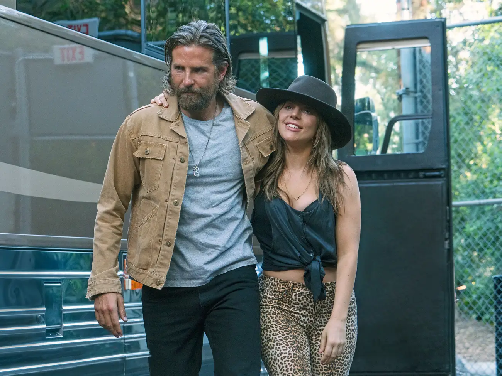

BIENVENUE
INTRO
Le cinéma est un art du spectacle. En français, il est couramment désigné comme le « septième art », d'après l'expression du critique Ricciotto Canudo dans les années 19201. L’art cinématographique se caractérise par le spectacle proposé au public sous la forme d’un film, c’est-à-dire d’un récit (fictionnel ou documentaire), véhiculé par un support (pellicule souple, bande magnétique, contenant numérique) qui est enregistré puis lu par un mécanisme continu ou intermittent qui crée l’illusion d’images en mouvement, ou par un enregistrement et une lecture continus de données informatiques.
Alors que les Avengers et leurs alliés ont continué de protéger le monde face à des menaces bien trop grandes pour être combattues par un héros seul, un nouveau danger est venu de l'espace : Thanos. Despote craint dans tout l'univers, Thanos a pour objectif de recueillir les six Pierres d'Infinité, des artefacts parmi les plus puissants de l'univers, et de les utiliser afin d'imposer sa volonté sur toute la réalité. Tous les combats que les Avengers ont menés culminent dans cette bataille.

Star de country un peu oubliée, Jackson Maine découvre Ally, une jeune chanteuse très prometteuse. Tandis qu'ils tombent follement amoureux l'un de l'autre, Jack propulse Ally sur le devant de la scène et fait d'elle une artiste adulée par le public. Bientôt éclipsé par le succès de la jeune femme, il vit de plus en plus de mal son propre déclin…
Halla, la cinquantaine, déclare la guerre à l’industrie locale de l’aluminium, qui défigure son pays. Elle prend tous les risques pour protéger les Hautes Terres d’Islande… Mais la situation pourrait changer avec l’arrivée inattendue d’une petite orpheline dans sa vie… Une femme autour de la cinquantaine mène un combat solitaire contre la multinationale de l'aluminium Rio Tinto qui tente d'étendre son implantation en Islande. Mais alors qu'elle prépare de nouveaux sabotages de lignes électriques, elle apprend q u'une demande d'adoption déposée depuis longtemps a abouti et qu'elle va devenir mère d'une jeune orpheline ukrainienne.